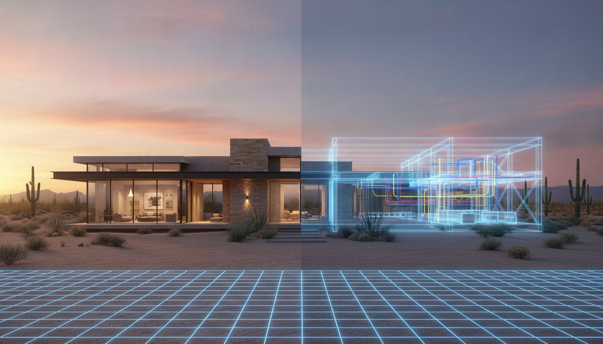
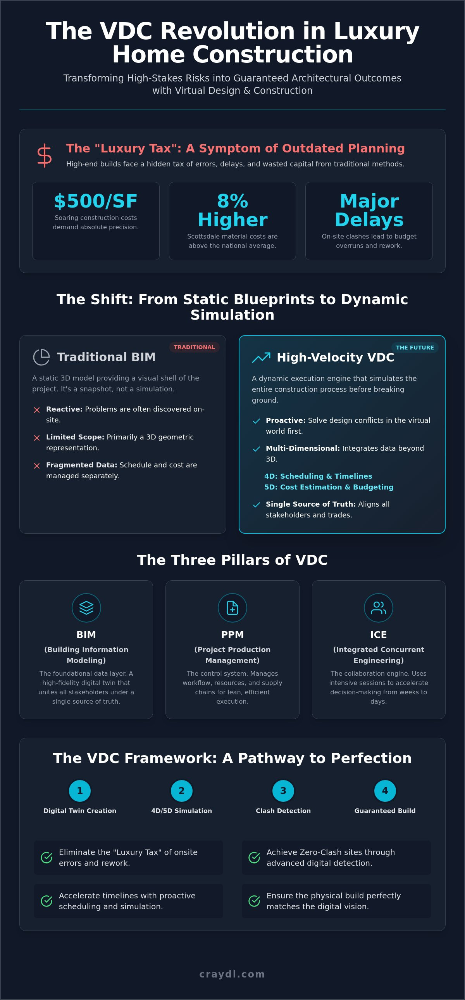

VDC for Luxury Homes Scottsdale: The High-Velocity Framework for Modern Construction

The "luxury tax" on high-end residential builds isn't an inevitable cost of doing business; it's a symptom of outdated planning. With construction costs reaching up to $500 per square foot and premium material prices, you can't afford to discover a design clash during the framing stage. You’ve likely felt the sting of budget overruns or the friction caused by communication gaps between elite architects and specialized trades. It's a high-stakes environment where even a minor oversight translates into massive delays and wasted capital.
Mastering VDC for luxury homes transforms your project from a series of educated guesses into a guaranteed outcome. By integrating high-velocity digital twins and automated clash detection, you reclaim creative control and eliminate the risk of costly onsite rework. This guide breaks down how to leverage Virtual Design and Construction to achieve zero-clash sites, accelerated timelines, and perfect alignment between your digital vision and the final physical build. We’ll show you how to bypass traditional hurdles and deliver architectural excellence with total precision and operational speed.
Key Takeaways
- Replace static blueprints with high-fidelity digital twins to guarantee architectural precision before your project breaks ground.
- Go beyond basic BIM by integrating 4D scheduling and 5D cost data for total command over your construction timeline.
- Eliminate the "luxury tax" of onsite errors through advanced clash detection that solves design conflicts in a virtual environment.
- Adopt a high-velocity framework for VDC for luxury homes Scottsdale to align architects and trades through a single source of truth.
- Leverage immersive VR and digital twin technology to visualize every detail and ensure your physical build matches your digital vision.
What is VDC Phoenix? Defining the Virtual Design and Construction Standard
The "Phoenix" in VDC Phoenix represents a total rebirth of the construction lifecycle. It's a move away from the ashes of fragmented, reactive planning and toward a future of digital precision. You aren't just building a house; you're simulating a masterpiece. This framework replaces traditional blueprints with a living, data-rich environment that eliminates the guesswork often found in high-end residential projects. It’s an evolution that turns potential logistical nightmares into a streamlined, predictable path to completion.
Defining Virtual Design and Construction starts with understanding it as the integrated management of multi-disciplinary performance models. It's a high-velocity engine for VDC for luxury homes Scottsdale. Unlike basic 3D modeling, which only provides a visual shell, VDC incorporates schedule and cost data to predict project health before you break ground. It shifts your team from reactive problem-solving to proactive digital simulation, ensuring every beam and pipe is accounted for in the virtual world first.
To better understand how these high-end projects come to life in the desert, watch this helpful video:
The Core Pillars of Virtual Design and Construction
Three essential pillars support this high-performance framework. BIM (Building Information Modeling) provides the foundational data layer that unites all project stakeholders under a single source of truth. PPM (Project Production Management) controls the flow of work and ensures resource allocation is lean and efficient. Finally, ICE (Integrated Concurrent Engineering) uses collaborative sessions to accelerate decision-making. This allows your team to finalize designs in days instead of weeks, keeping the momentum of your build at a constant peak.
Why Luxury Builds Require a VDC Framework
High-end Scottsdale estates often feature complex architectural geometries that defy standard construction methods. VDC for luxury homes Scottsdale ensures that intricate MEP systems, mechanical, electrical, and plumbing, align perfectly with structural constraints. With local material costs sitting 8% above the national average, you can't afford the "luxury tax" of onsite errors and rework. This framework provides stakeholders with absolute visual clarity through immersive digital environments. It transforms construction from a series of expensive risks into a guaranteed creative outcome that respects both your time and your budget.
High-Velocity VDC vs. Traditional BIM in Scottsdale
Traditional BIM often stops at the 3D model. It’s a static representation of what you hope to build. High-velocity VDC, however, is a dynamic execution engine. It takes that data and puts it into motion. By following the principles established by the Stanford VDC program, we move beyond simple visualization. Implementing VDC for luxury homes Scottsdale creates a high-speed environment where every decision is backed by live data. It turns a digital file into a powerful tool for project management.
This framework incorporates 4D scheduling and 5D cost estimation. In a market where Scottsdale construction costs can reach $500 per square foot, you need more than a drawing. You need to know exactly how time impacts your budget. VDC allows you to simulate the construction sequence day by day. You can see how material deliveries and trade schedules interact before they ever reach the site. This level of control is essential when Scottsdale material costs sit 8% above the national average.
The core of this process is the use of digital twins. This isn't a "set and forget" file. It's a living blueprint that mirrors the physical site in real time. It allows for a digital-first approach that prioritizes speed and accuracy. You solve the problems in the model so they never happen on the lot. This proactive simulation ensures that the elite outcomes you expect are achieved without significant manual effort or expensive field adjustments.
From Blueprints to Digital Twins
Blueprints are snapshots in time. Digital twins are evolving ecosystems. We’ve moved from flat 2D drawings to immersive 3D environments that validate every design choice. You can step into your project using virtual reality before the first footer is poured. This allows for instant stakeholder feedback and rapid design iteration. It’s about achieving elite visual fidelity with zero manual guesswork. The digital model becomes the primary director of your visual narrative, evolving alongside the physical build.
The ROI of Virtual Construction for Luxury Builders
The "change order culture" is the primary enemy of high-end builds. VDC kills it through rigorous digital verification. You identify logistical bottlenecks and trade conflicts months before they cause a delay. This precision creates a shared digital truth for every contractor on the job.
- Eliminate field clashes between complex HVAC systems and structural steel.
- Sync trade schedules to prevent onsite overcrowding and labor friction.
- Lock in material takeoffs with high accuracy to prevent budget overruns.
This level of coordination shortens project timelines and improves onsite efficiency. If you're ready to secure your project's timeline and budget, exploring specialized pre-construction planning is the next logical step for any modern builder.
Eliminating Project Risk Through Advanced Clash Detection
Clash detection is the heartbeat of risk mitigation. It’s the stage where your digital twin earns its keep by identifying failures before they reach the lot. For anyone utilizing VDC for luxury homes Scottsdale, this is the moment where digital simulation meets physical reality. You aren't just looking for mistakes. You're guaranteeing structural fidelity and protecting a multi-million dollar investment from the friction of onsite errors. It’s about achieving a zero-clash construction site through relentless digital verification.
We categorize these conflicts into three specific tiers. Hard clashes occur when two components occupy the same physical space, such as a structural steel beam intersecting a main HVAC trunk. Soft clashes involve clearance and tolerance issues, ensuring systems have the required space for maintenance and code compliance. Workflow clashes are scheduling errors that paralyze your site, such as two trades being scheduled for the same confined space simultaneously. High-end residential BIM services identify these failures in the virtual model, shielding your budget from the "luxury tax" of field rework.
This proactive approach is essential in a market where Scottsdale material costs sit 8% above the national average. Every mistake corrected in the digital model is thousands of dollars saved in material waste and labor hours. You eliminate the guesswork and replace it with a high-velocity framework for success.
Identifying MEP and Structural Conflicts
Custom Scottsdale estates often feature complex architectural geometries like vaulted ceilings and massive glass spans. These designs leave very little "dead space" for mechanical, electrical, and plumbing (MEP) systems. We ensure these systems align perfectly with structural constraints. This precision is vital for the success of high-end interior design and custom cabinetry. When the digital model is perfect, the physical installation is seamless. Your trades arrive on site with the confidence that everything will fit the first time.
Proactive Risk Management Strategies
Risk management extends beyond the walls of the home to the lot itself. Many Scottsdale projects are located on restricted hillside sites with narrow access and strict zoning regulations. We use VDC to simulate construction sequences and site logistics. This prevents labor friction and keeps your skilled workforce, currently averaging $40 to $56 per hour, productive and focused. This digital accountability provides total transparency for the homeowner, ensuring their vision is delivered without compromise or unexpected delays.

The VDC Workflow: A 5-Step Implementation Guide
The pre-construction phase is your project's golden hour. This is the critical window where VDC for luxury homes Scottsdale transitions from a high-level concept into a tactical roadmap. You don't just hope for a smooth build. You engineer it. By prioritizing pre-construction planning, you front-load the decision-making process to ensure that physical construction is a mere formality of an already perfected digital plan. It’s about moving fast without the friction of traditional logistical hurdles.
A successful VDC workflow requires early stakeholder involvement. When architects, engineers, and trades collaborate within a shared digital environment, communication gaps vanish. This high-velocity framework ensures that every design intent is technically feasible before you commit capital to the site. It replaces the "wait and see" approach with a "simulated and solved" standard that protects your creative vision and your bottom line.
To keep your research and documentation phase just as efficient, you can explore Clarami Pro as a workspace to streamline your technical writing and professional reports.
Step 1: Digital Discovery and Model Aggregation
Your journey begins with the creation of a federated model. We collect every architectural, structural, and interior design file to establish a Single Source of Truth for all project stakeholders. This isn't just a collection of data. It's the central nervous system of your project. We define specific project goals and KPIs to measure success, such as resolving 100% of major structural clashes before permit approval. This early alignment ensures that everyone is working toward the same elite outcome from day one.
Step 2 & 3: Simulation, Optimization, and Resolution
Once the model is aggregated, the high-velocity simulation begins. We run automated clash detection reports to resolve conflicts in the digital space. This goes beyond simple plumbing overlaps. We simulate construction phases to identify scheduling bottlenecks and site logistics on tight Scottsdale lots. This phase also optimizes material takeoffs. You achieve precise project budgeting and procurement by knowing exactly what you need. It replaces the "buffer" in your budget with data-backed certainty, reducing the risk of unexpected costs during the build.
The final steps involve immersive visualization for stakeholder sign-off and the digital execution handoff to the field. This comprehensive five-step cycle ensures your vision remains intact from the first render to the final walkthrough. If you're ready to eliminate the guesswork and take total control of your next project, explore our VDC implementation services to secure your build's success.
Elevating Luxury Builds with CRAYDL VDC Services
CRAYDL stands as the premier partner for high-fidelity VDC for luxury homes Scottsdale. We bridge the gap between elite architectural vision and flawless physical execution. Our studio specializes in the unique demands of the high-end residential market, where property values and design standards are among the highest in the country. We don't just provide data. We deliver creative liberation. By using cutting-edge Virtual Reality and digital twin technologies, we transform complex logistics into a streamlined, visual narrative that ensures your project remains a masterpiece.
Modern luxury builds require more than just a plan. They require a digital-first strategy that prioritizes speed and precision. For firms looking to secure the high-performance IT infrastructure needed to power these digital environments, you can visit Klaravex LLC to discover their managed security and support services. We invite builders and architects to experience the power of a fully simulated construction lifecycle. This approach ensures every custom feature and high-end finish is validated before construction begins. You achieve professional-grade results without the manual effort of traditional troubleshooting. It's about moving from the initial state to the final result with total confidence and operational velocity.
Our Approach to Program Management
We act as a technical advocate for the homeowner’s vision. Our program management services ensure that architectural design intent is never compromised by logistical oversights. We manage multi-disciplinary models to keep every trade aligned, acting as the discreet expert behind the scenes. One of our core strengths is the use of project-based VDC fees. This provides you with predictable budgeting and total cost control, eliminating the financial uncertainty often associated with complex custom builds.
We also integrate high-end marketing renderings with functional construction models. This creates a seamless experience from the initial sales presentation to the final walkthrough. Your clients see exactly what they're getting, and your trades know exactly how to build it. It’s a unified workflow that maximizes efficiency and visual excellence. By front-loading the decision-making process through pre-construction planning, we ensure the physical build is as fluid as the digital model.
The Future of Your Next Luxury Project
The next generation of Scottsdale architecture will be defined by digital twinning. Advanced simulations allow you to bypass traditional hurdles and deliver projects with unprecedented velocity. Offering VR walkthroughs is no longer a luxury; it’s a competitive necessity. It allows discerning clients to step into their future homes and make informed decisions in real-time. This reduces the need for late-stage changes and keeps the project moving at peak performance.
CRAYDL is your innovative partner in this digital evolution. We handle the heavy lifting of model management so you can focus on the creative direction of the build. Ready to streamline your next project and secure your reputation for excellence? Discerning clients who value precision in their architectural projects often seek the same excellence in their personal travel; for those interested in high-tech flight training, you can visit Vision Aviation to explore their advanced Garmin-equipped fleet. Reach out to us for a specialized VDC consultation and see how we can elevate your next luxury build.
Master the Future of Your High-Performance Build
The traditional construction cycle is broken, but you don't have to follow its path. You've seen how moving from static blueprints to high-fidelity digital twins eliminates the "luxury tax" of onsite rework. By mastering VDC for luxury homes Scottsdale, you reclaim your timeline and your budget. You transform potential logistical bottlenecks into a streamlined, automated workflow that prioritizes results. This high-velocity framework ensures that every design choice is validated before the first footer is poured.
Architectural excellence shouldn't come with the cost of constant change orders. It requires a partner that understands the intersection of aesthetics and technological speed. CRAYDL serves as your specialized creative partner. As luxury residential specialists, we use immersive VR and digital twin integration to ensure your physical build matches your digital vision. Precise pre-construction planning is the foundation of every successful elite estate. It turns construction from a series of guesses into a guaranteed outcome.
Ready to eliminate project risk? Discover CRAYDL VDC services today.
The power to build with absolute certainty is now in your hands. Take the first step toward a zero-clash construction site and watch your vision come to life with total precision and speed. Build with confidence.
Frequently Asked Questions
What is the difference between BIM and VDC?
BIM is the product, while VDC is the methodology. Building Information Modeling provides the data-rich 3D model of your project. Virtual Design and Construction uses that model to manage the entire lifecycle, including scheduling and cost. It’s the difference between having a high-fidelity map and having a GPS with real-time traffic updates to guide your execution.
How does VDC improve project budgeting for luxury homes?
VDC integrates 5D cost data directly into the digital twin. This allows for high-precision material takeoffs that reflect the real-world complexities of VDC for luxury homes Scottsdale. By identifying exact material needs and labor requirements in the digital phase, you eliminate the "contingency padding" usually required to cover traditional construction errors and waste.
Can VDC be used for residential renovations or only new builds?
VDC is highly effective for luxury renovations and additions. We use laser scanning to capture existing conditions with millimeter accuracy before design begins. This creates a digital twin of the current structure, allowing us to simulate new architectural features within the old framework. It prevents the common discovery of "hidden" structural issues once demolition starts.
How much time does the VDC process add to pre-construction?
The VDC process front-loads your project effort to save time later. While it may add several weeks to the pre-construction phase, it typically shaves months off the total construction timeline. You spend time solving problems in a virtual environment so you don't spend time fixing them on the job site when labor and material costs are at their peak.
Do I need special software to view VDC models as a builder?
You don't need expensive software or high-end hardware to benefit from our models. We provide cloud-based viewers and immersive VR walkthroughs that you can access from a standard tablet or headset. This ensures that every stakeholder has instant access to the single source of truth without technical barriers or significant manual effort.
What are the main benefits of clash detection in VDC?
Clash detection ensures that structural, mechanical, and electrical systems never compete for the same physical space. It eliminates the "luxury tax" of field rework and expensive labor delays. By resolving these conflicts in the digital twin, you ensure that high-end finishes and custom cabinetry fit perfectly on the first attempt without onsite modifications.
How does a digital twin benefit the homeowner after construction?
Homeowners receive a living manual of their property. The digital twin contains data on every pipe, wire, and mechanical system hidden behind the walls. This is invaluable for future maintenance, energy performance monitoring, or subsequent renovations. It adds a layer of technical sophistication that increases the long-term value and operational efficiency of the estate.
Is VDC cost-effective for smaller luxury residential projects?
VDC is exceptionally cost-effective for smaller luxury projects where margins are tighter. A single design clash on a smaller lot can cause a disproportionate delay and budget overrun. Implementing VDC for luxury homes Scottsdale on a smaller scale ensures that every square foot is optimized and every dollar of the budget is spent on quality rather than correction.
